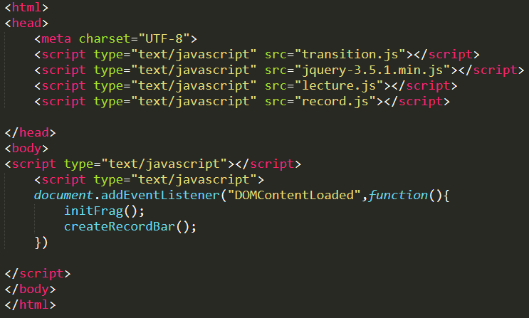
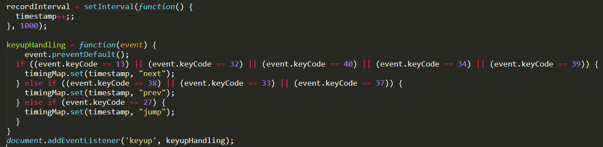
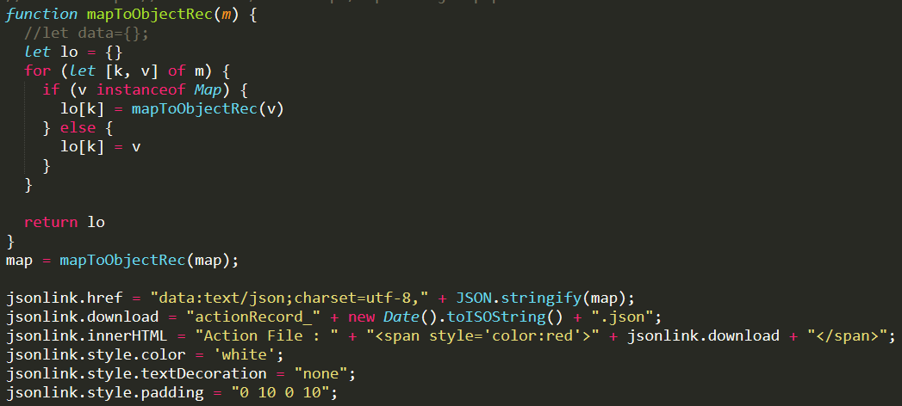
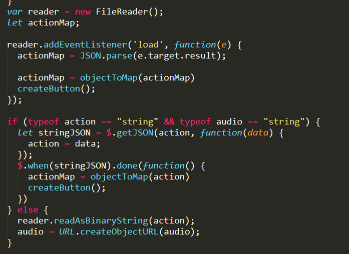
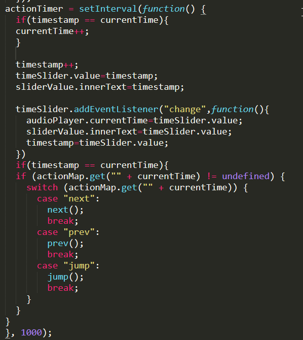

Projet Individualisé
Session 2019-2020
Présenté par Quentin LEVENARD
Présentation du Projet
Projet choisi : Création/développement d'un outil de création de présentations en Javascript/HTML5
Plus précisément, améliorer le script
Objectifs possibles :
- Extension des options de transitions et de leur description
- Enregistrement audio
- Interaction type Quizz en live
- Représentation de liens (flèches et autres) entre les éléments
- Formules Mathématiques dynamiques
- Choix personnel
Plus de précision :
- Enregistrement audio (micro)
- Enregistrement des actions effectuées
- Lecture des enregistrements
Comment l'utiliser ?
Setup :

Points techniques
Comment sont enregistrées les actions ?


- Fonction de temps
- Capture des touches appuyés
- Enregistrement dans une Map
- Transformation en liste
- Création du bouton de téléchargement
Comment sont-elles lues ?

- Parsing des fichiers
- Transformation en Map
- Toutes les secondes, vérifier si le temps existe dans la Map
- Exécuter la fonction correspondante